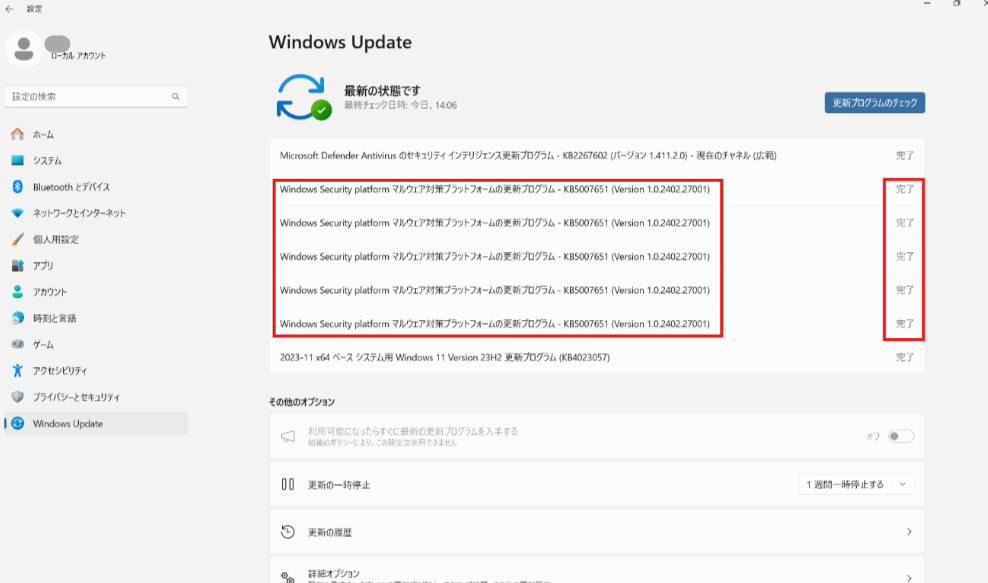

本記事では、Windows セキュリティアプリの更新プログラムである KB5007651 が繰り返し配信され、正常にインストールできない事象についての対処方法をご案内しております。
本記事の内容
事象の概要
一部の環境において、KB5007651 が正常にインストールされず、Windows セキュリティアプリのバージョンが最新に更新されない事象を確認しております。
本事象では、KB5007651 の更新が繰り返し試行された出力が Windows Update に記録される特徴がございます。

問題の発生原因
本事象は、何らかの理由により残存していた古い “SecurityHealthSetup.exe” が原因で、KB5007651 の更新時に「HKLM\SOFTWARE\Microsoft\Windows Security Health\Updates」パス内の “wu” レジストリ値が正しく更新されず、”CopyError” として判定されることに起因します。
問題の解決方法
本事象の対処には、”SecurityHealthSetup.exe” の削除と、一部レジストリ値の修正が必要です。
問題の解消のためには以下の手順をご実施ください。
- 以下の PowerShell スクリプトを
ResetWsa.ps1などのファイル名で保存したファイルをC:\Tempフォルダに保存します。
※ “C:\Temp” が存在しない場合には事前に作成いただきますようお願いいたします。
1 |
|
- コマンドプロンプトを管理者権限で実行し、以下のコマンドを入力します。
1 | PowerShell -ExecutionPolicy Bypass C:\Temp\ResetWsa.ps1 |
※ スクリプトの実行時にはインターネットから PSTools のダウンロードが行われ、問題の解消のために必要な設定変更が行われます。
スクリプトの実行後、端末を再起動します。
Windows Update を確認し、最新の KB5007651 を適用します。
なお、スクリプトの使用が難しい場合は、手動での対処も可能です。
以下の手順を参考に、”SecurityHealthSetup.exe” の削除、およびレジストリの修正をご実施ください。
<PsExec の準備>
本作業はシステム権限が必要となりますので、以下の手順に沿って PsExec を準備してから、後述の作業をご実施ください。
- 以下のページから、PsExec をダウンロードします。
PsExec v2.43: https://learn.microsoft.com/en-us/sysinternals/downloads/psexec
- ダウンロードしたファイルを解凍し、psexec.exe を C:\Windows\System32 フォルダにコピーします。
※ C:\Windows\System32 フォルダに保存することで、どのディレクトリからでも使用可能になります。
<SecurityHealthSetup.exe を削除する>
コマンドプロンプトを管理者権限で実行します。
以下のコマンドを実行いただき、システム権限でコマンドプロンプトを開きます。
1 | psexec -s -i cmd.exe |
- 以下のコマンドで「SecurityHealthSetup.exe」ファイルを削除します。
1 | del C:\Windows\System32\SecurityHealth\SecurityHealthSetup.exe |
※ 万が一、”SecurityHealthSetup.exe” が削除されない場合には、”del /f C:\Windows\System32\SecurityHealth\SecurityHealthSetup.exe” で実行してください
<”Registered”、”CoreLocation” レジストリを変更する>
- コマンドプロンプトを管理者権限で実行します。
- 以下のコマンドにて、レジストリエディターを開きます。
1 | psexec -s -i regedit.exe |
- 以下のパスに移動します。
HKEY_LOCAL_MACHINE\Software\Microsoft\Windows Security Health\Platform
「Registered」キーを右クリックし、「修正 (Modify)」を選択します。
値を 1 から 0 に変更し、「OK」をクリックして変更を保存します。
「CoreLocation」キーを右クリックし、「修正 (Modify)」を選択します。
値を「
\\?\C:\Windows\System32\SecurityHealth\1.0.2306.10002-0」などから、「\\?\C:\Windows\System32」に変更し、「OK」をクリックして変更を保存します。端末を再起動します。